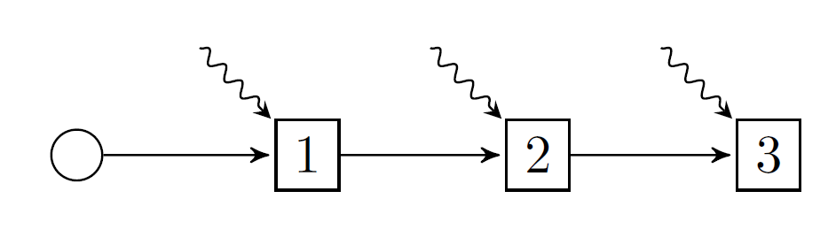

Basic I: first steps
SDDP.jl is a solver for multistage stochastic optimization problems. By multistage, we mean problems in which the agent makes a sequence of decisions over time. By stochastic, we mean that our agent is making decisions in the presence of uncertainty that is gradually revealed over the multiple stages.
Background theory
Multistage stochastic programming is complicated, and the literature has not settled upon standard naming conventions, so we must begin with some unavoidable theory and notation.
Policy graphs
A multistage stochastic program can be modeled by a policy graph. A policy graph is a graph with nodes and arcs. The simplest type of policy graph is a linear graph. Here's a linear graph with three nodes:

In addition to nodes 1, 2, and 3, there is also a root node (the circle), and three arcs. Each arc has an origin node and a destination node, like 1 => 2, and a corresponding probability of transitioning from the origin to the destination. Unless specified, we assume that the arc probabilities are uniform over the number of outgoing arcs. Thus, in this picture the arc probabilities are all 1.0. The squiggly lines denote random variables that we will discuss shortly.
We denote the set of nodes by $\mathcal{N}$, the root node by $R$, and the probability of transitioning from node $i$ to node $j$ by $p_{ij}$. (If no arc exists, then $p_{ij} = 0$.) We define the set of successors of node $i$ as $i^+ = \{j \in \mathcal{N} | p_{ij} > 0\}$.
Each square node in the graph corresponds to a place at which the agent makes a decision, and we call moments in time at which the agent makes a decision stages. By convention, we try to draw policy graphs from left-to-right, with the stages as columns. There can be more than one node in a stage! Here's an example, taken from the paper Dowson (2020):

The columns represent time, and the rows represent different states of the world. In this case, the rows represent different prices that milk can be sold for at the end of each year. The squiggly lines denote a multivariate random variable that models the weekly amount of rainfall that occurs. You can think of the nodes as forming a Markov chain, therefore, we call problems with a structure like this Markovian policy graphs. Moreover, note that policy graphs can have cycles! This allows them to model infinite horizon problems.
The sum of probabilities on the outgoing arcs of node $i$ can be less than 1, i.e., $\sum\limits_{j\in i^+} p_{ij} \le 1$. What does this mean? One interpretation is that the probability is a discount factor. Another interpretation is that there is an implicit "zero" node that we have not modeled, with $p_{i0} = 1 - \sum\limits_{j\in i^+} p_{ij}$. This zero node has $C_0(x, u, \omega) = 0$, and $0^+ = \varnothing$.
Problem notation
A common feature of multistage stochastic optimization problems is that they model an agent controlling a system over time. This system can be described by three types of variables.
State variables track a property of the system over time.
Each node has an associated incoming state variable (the value of the state at the start of the node), and an outgoing state variable (the value of the state at the end of the node).
Examples of state variables include the volume of water in a reservoir, the number of units of inventory in a warehouse, or the spatial position of a moving vehicle.
Because state variables track the system over time, each node must have the same set of state variables.
We denote state variables by the letter $x$ for the incoming state variable and $x^\prime$ for the outgoing state variable.
Control variables are actions taken (implicitly or explicitly) by the agent within a node which modify the state variables.
Examples of control variables include releases of water from the reservoir, sales or purchasing decisions, and acceleration or braking of the vehicle.
Control variables are local to a node $i$, and they can differ between nodes. For example, some control variables may be available within certain nodes.
We denote control variables by the letter $u$.
Random variables are finite, discrete, exogenous random variables that the agent observes at the start of a node, before the control variables are decided.
Examples of random variables include rainfall inflow into a reservoir, probalistic perishing of inventory, and steering errors in a vehicle.
Random variables are local to a node $i$, and they can differ between nodes. For example, some nodes may have random variables, and some nodes may not.
We denote random variables by the Greek letter $\omega$ and the sample space from which they are drawn by $\Omega_i$. The probability of sampling $\omega$ is denoted $p_{\omega}$ for simplicity.
Importantly, the random variable associated with node $i$ is independent of the random variables in all other nodes.
In a node $i$, the three variables are related by a transition function, which maps the incoming state, the controls, and the random variables to the outgoing state as follows: $x^\prime = T_i(x, u, \omega)$.
As a result of entering a node $i$ with the incoming state $x$, observing random variable $\omega$, and choosing control $u$, the agent incurs a cost $C_i(x, u, \omega)$. (If the agent is a maximizer, this can be a profit, or a negative cost.) We call $C_i$ the stage objective.
To choose their control variables in node $i$, the agent uses a decision rule $u = \pi_i(x, \omega)$, which is a function that maps the incoming state variable and observation of the random variable to a control $u$. This control must satisfy some feasibilty requirements $u \in U_i(x, \omega)$.
The set of decision rules, with one element for each node in the policy graph, is called a policy.
The goal of the agent is to find a policy that minimizes the expected cost of starting at the root node with some initial condition $x_R$, and proceeding from node to node along the probabilistic arcs until they reach a node with no outgoing arcs (or it reaches an implicit "zero" node).
\[\min_{\pi} \mathbb{E}_{i \in R^+, \omega \in \Omega_i}[V_i^\pi(x_R, \omega)],\]
where
\[V_i^\pi(x, \omega) = C_i(x, u, \omega) + \mathbb{E}_{j \in i^+, \varphi \in \Omega_j}[V_j(x^\prime, \varphi)],\]
where $u = \pi_i(x, \omega) \in U_i(x, \omega)$, and $x^\prime = T_i(x, u, \omega)$.
The expectations are a bit complicated, but they are equivalent to:
\[\mathbb{E}_{j \in i^+, \varphi \in \Omega_j}[V_j(x^\prime, \varphi)] = \sum\limits_{j \in i^+} p_{ij} \sum\limits_{\varphi \in \Omega_j} p_{\varphi}V_j(x^\prime, \varphi).\]
An optimal policy is the set of decision rules that the agent can use to make decisions and achieve the smallest expected cost.
Assumptions
This section is important!
The space of problems you can model with this framework is very large. Too large, in fact, for us to form tractable solution algorithms for! Stochastic dual dynamic programming requires the following assumptions in order to work:
Assumption 1: finite nodes
There is a finite number of nodes in $\mathcal{N}$.
Assumption 2: finite random variables
The sample space $\Omega_i$ is finite and discrete for each node $i\in\mathcal{N}$.
Assumption 3: convex problems
Given fixed $\omega$, $C_i(x, u, \omega)$ is a convex function, $T_i(x, u, \omega)$ is linear, and $U_i(x, u, \omega)$ is a non-empty, bounded convex set with respect to $x$ and $u$.
Assumption 4: no infinite loops
For all loops in the policy graph, the product of the arc transition probabilities around the loop is strictly less than 1.
SDDP.jl relaxes assumption (3) to allow for integer state and control variables, but we won't go into the details here. Assumption (4) essentially means that we obtain a discounted-cost solution for infinite-horizon problems, instead of an average-cost solution; see Dowson (2020) for details.
Dynamic programming and subproblems
Now that we have formulated our problem, we need some ways of computing optimal decision rules. One way is to just use a heuristic like "choose a control randomally from the set of feasible controls." However, such a policy is unlikely to be optimal.
A better way of obtaining an optimal policy is to use Bellman's principle of optimality, a.k.a Dynamic Programming, and define a recursive subproblem as follows:
\[\begin{aligned} V_i(x, \omega) = \min\limits_{\bar{x}, x^\prime, u} \;\; & C_i(\bar{x}, u, \omega) + \mathbb{E}_{j \in i^+, \varphi \in \Omega_j}[V_j(x^\prime, \varphi)]\\ & x^\prime = T_i(\bar{x}, u, \omega) \\ & u \in U_i(\bar{x}, \omega) \\ & \bar{x} = x. \end{aligned}\]
Our decision rule, $\pi_i(x, \omega)$, solves this optimization problem and returns a $u^*$ corresponding to an optimal solution.
We add $\bar{x}$ as a decision variable, along with the fishing constraint $\bar{x} = x$ for two reasons: it makes it obvious that formulating a problem with $x \times u$ results in a bilinear program instead of a linear program (see Assumption 3), and it simplifies the implementation of the SDDP algorithm.
These subproblems are very difficult to solve exactly, because they involve recursive optimization problems with lots of nested expectations.
Therefore, instead of solving them exactly, SDDP.jl works by iteratively approximating the expectation term of each subproblem, which is also called the cost-to-go term. For now, you don't need to understand the details, other than that there is a nasty cost-to-go term that we deal with behind-the-scenes.
The subproblem view of a multistage stochastic program is also important, because it provides a convienient way of communicating the different parts of the broader problem, and it is how we will communicate the problem to SDDP.jl. All we need to do is drop the cost-to-go term and fishing constraint, and define a new subproblem SP as:
\[\begin{aligned} \texttt{SP}_i(x, \omega) : \min\limits_{\bar{x}, x^\prime, u} \;\; & C_i(\bar{x}, u, \omega) \\ & x^\prime = T_i(\bar{x}, u, \omega) \\ & u \in U_i(\bar{x}, \omega). \end{aligned}\]
When we talk about formulating a subproblem with SDDP.jl, this is the formulation we mean.
We've retained the transition function and uncertainty set because they help to motivate the different components of the subproblem. However, in general, the subproblem can be more general. A better (less restrictive) representation might be:
\[\begin{aligned} \texttt{SP}_i(x, \omega) : \min\limits_{\bar{x}, x^\prime, u} \;\; & C_i(\bar{x}, x^\prime, u, \omega) \\ & (\bar{x}, x^\prime, u) \in \mathcal{X}_i(\omega). \end{aligned}\]
Note that the outgoing state variable can appear in the objective, and we can add constraints involving the incoming and outgoing state variables. It should be obvious how to map between the two representations.
Example: hydro-thermal scheduling
Hydrothermal scheduling is the most common application of stochastic dual dynamic programming. To illustrate some of the basic functionality of SDDP.jl, we implement a very simple model of the hydrothermal scheduling problem. To make things even simpler to start with, we're not going to include any uncertainty; that will come in the next tutorial.
Problem statement
We consider the problem of scheduling electrical generation over three weeks in order to meet a known demand of 150 MWh in each week.
There are two generators: a thermal generator, and a hydro generator. In each week, the agent needs to decide how much energy to generate from thermal, and how much energy to generate from hydro.
The thermal generator has a short-run marginal cost of \$50/MWh in the first stage, \$100/MWh in the second stage, and \$150/MWh in the third stage.
The hydro generator has a short-run marginal cost of \$0/MWh.
The hydro generator draws water from a reservoir which has a maximum capacity of 200 MWh. (Although water is usually measured in m³, we measure it in the energy-equivalent MWh to simplify things. In practice, there is a conversion function between m³ flowing throw the turbine and MWh.) At the start of the first time period, the reservoir is full.
In addition to the ability to generate electricity by passing water through the hydroelectric turbine, the hydro generator can also spill water down a spillway (bypassing the turbine) in order to prevent the water from over-topping the dam. We assume that there is no cost of spillage.
The goal of the agent is to minimize the expected cost of generation over the three weeks.
Formulating the problem
Before going further, we need to load SDDP.jl:
using SDDPGraph structure
First, we need to identify the structre of the policy graph. From the problem statement, we want to model the problem over three weeks in weekly stages. Therefore, the policy graph is a linear graph with three stages:
graph = SDDP.LinearGraph(3)Root
0
Nodes
1
2
3
Arcs
0 => 1 w.p. 1.0
1 => 2 w.p. 1.0
2 => 3 w.p. 1.0
Building the subproblem
Next, we need to construct the associated subproblem for each node in graph. To do so, we need to provide SDDP.jl a function which takes two arguments. The first is subproblem::Model, which is an empty JuMP model. The second is node, which is the name of each node in the policy graph. If the graph is linear, SDDP defaults to naming the nodes using the integers in 1:T. Here's an example that we are going to flesh out over the next few paragraphs:
function subproblem_builder(subproblem::Model, node::Int)
# ... stuff to go here ...
return subproblem
endsubproblem_builder (generic function with 1 method)We don't need to add the fishing constraint $\bar{x} = x$; SDDP.jl does this automatically.
State variables
The first part of the subproblem we need to identify are the state variables. Since we only have one reservoir, there is only one state variable, volume, the volume of water in the reservoir [MWh].
The volume had bounds of [0, 200], and the reservoir was full at the start of time, so $x_R = 200$.
We add state variables to our subproblem using JuMP's @variable macro. However, in addition to the usual syntax, we also pass SDDP.State, and we need to provide the initial value ($x_R$) using the initial_value keyword.
function subproblem_builder(subproblem::Model, node::Int)
# State variables
@variable(subproblem, 0 <= volume <= 200, SDDP.State, initial_value = 200)
return subproblem
endsubproblem_builder (generic function with 1 method)The syntax for adding a state variable is a little obtuse, because volume is not single JuMP variable. Instead, volume is a struct with two fields, .in and .out, corresponding to the incoming and outgoing state variables respectively.
Control variables
The next part of the subproblem we need to identiy are the control variables. The control variables for our problem are:
thermal_generation: the quantity of energy generated from thermal [MWh/week]hydro_generation: the quantity of energy generated from hydro [MWh/week]hydro_spill: the volume of water spilled from the reservoir in each week [MWh/week]
Each of these variables is non-negative.
We add control variables to our subproblem as normal JuMP variables, using @variable or @variables:
function subproblem_builder(subproblem::Model, node::Int)
# State variables
@variable(subproblem, 0 <= volume <= 200, SDDP.State, initial_value = 200)
# Control variables
@variables(subproblem, begin
thermal_generation >= 0
hydro_generation >= 0
hydro_spill >= 0
end)
return subproblem
endsubproblem_builder (generic function with 1 method)Modeling is an art, and a tricky part of that art is figuring out which variables are state variables, and which are control variables. A good rule is: if you need a value of a control variable in some future node to make a decision, it is a state variable instead.
Random variables
The next step is to identify any random variables. In this simple example, there are none, so we can skip it.
Transition function and contraints
Now that we've identified our variables, we can define the transition function and the constraints.
For our problem, the state variable is the volume of water in the reservoir. The volume of water decreases in response to water being used for hydro generation and spillage. So the transition function is: volume.out = volume.in - hydro_generation - hydro_spill. (Note how we use volume.in and volume.out to refer to the incoming and outgoing state variables.)
There is also a constraint that the total generation must sum to 150 MWh.
Both the transition function and any additional constraint are added using JuMP's @constraint and @constraints macro.
function subproblem_builder(subproblem::Model, node::Int)
# State variables
@variable(subproblem, 0 <= volume <= 200, SDDP.State, initial_value = 200)
# Control variables
@variables(subproblem, begin
thermal_generation >= 0
hydro_generation >= 0
hydro_spill >= 0
end)
# Transition function and constraints
@constraints(
subproblem,
begin
volume.out == volume.in - hydro_generation - hydro_spill
hydro_generation + thermal_generation == 150
end
)
return subproblem
endsubproblem_builder (generic function with 1 method)Objective function
Finally, we need to add an objective function using @stageobjective. The objective of the agent is to minimize the cost of thermal generation. This is complicated by a fuel cost that depends on the node.
One possibility is to use an if statement on node to define the correct objective:
function subproblem_builder(subproblem::Model, node::Int)
# State variables
@variable(subproblem, 0 <= volume <= 200, SDDP.State, initial_value = 200)
# Control variables
@variables(subproblem, begin
thermal_generation >= 0
hydro_generation >= 0
hydro_spill >= 0
end)
# Transition function and constraints
@constraints(
subproblem,
begin
volume.out == volume.in - hydro_generation - hydro_spill
hydro_generation + thermal_generation == 150
end
)
# Stage-objective
if node == 1
@stageobjective(subproblem, 50 * thermal_generation)
elseif node == 2
@stageobjective(subproblem, 100 * thermal_generation)
else
@assert node == 3
@stageobjective(subproblem, 150 * thermal_generation)
end
return subproblem
endsubproblem_builder (generic function with 1 method)A second possibility is to use an array of fuel costs, and use node to index the correct value:
function subproblem_builder(subproblem::Model, node::Int)
# State variables
@variable(subproblem, 0 <= volume <= 200, SDDP.State, initial_value = 200)
# Control variables
@variables(subproblem, begin
thermal_generation >= 0
hydro_generation >= 0
hydro_spill >= 0
end)
# Transition function and constraints
@constraints(
subproblem,
begin
volume.out == volume.in - hydro_generation - hydro_spill
hydro_generation + thermal_generation == 150
end
)
# Stage-objective
fuel_cost = [50, 100, 150]
@stageobjective(subproblem, fuel_cost[node] * thermal_generation)
return subproblem
endsubproblem_builder (generic function with 1 method)Contructing the model
Now that we've written our subproblem, we need to contruct the full model. For that, we're going to need a linear solver. Let's choose GLPK:
using GLPKThen, we can create a full model using SDDP.PolicyGraph, passing our subproblem_builder function as the first argument, and our graph as the second:
model = SDDP.PolicyGraph(
subproblem_builder,
graph;
sense = :Min,
lower_bound = 0.0,
optimizer = GLPK.Optimizer,
)A policy graph with 3 nodes.
Node indices: 1, 2, 3
sense: the optimization sense. Must be:Minor:Max.lower_bound: you must supply a valid bound on the objective. For our problem, we know that we cannot incur a negative cost so \$0 is a valid lower bound.optimizer: This is borrowed directly from JuMP'sModelconstructor:Model(GLPK.Optimizer)
Because linear policy graphs are the most commonly used structure, we can use SDDP.LinearPolicyGraph(; stages) instead of passing SDDP.LinearGraph(3) to SDDP.PolicyGraph.
model = SDDP.LinearPolicyGraph(
subproblem_builder;
stages = 3,
sense = :Min,
lower_bound = 0.0,
optimizer = GLPK.Optimizer,
)A policy graph with 3 nodes.
Node indices: 1, 2, 3
There is also the option is to use Julia's do syntax to avoid needing to define a subproblem_builder function separately:
model = SDDP.LinearPolicyGraph(
stages = 3,
sense = :Min,
lower_bound = 0.0,
optimizer = GLPK.Optimizer,
) do subproblem, node
# State variables
@variable(subproblem, 0 <= volume <= 200, SDDP.State, initial_value = 200)
# Control variables
@variables(subproblem, begin
thermal_generation >= 0
hydro_generation >= 0
hydro_spill >= 0
end)
# Transition function and constraints
@constraints(
subproblem,
begin
volume.out == volume.in - hydro_generation - hydro_spill
hydro_generation + thermal_generation == 150
end
)
# Stage-objective
if node == 1
@stageobjective(subproblem, 50 * thermal_generation)
elseif node == 2
@stageobjective(subproblem, 100 * thermal_generation)
else
@assert node == 3
@stageobjective(subproblem, 150 * thermal_generation)
end
endA policy graph with 3 nodes.
Node indices: 1, 2, 3
Julia's do syntax is just a different way of passing an anonymous function inner to some function outer which takes inner as the first argument. For example, given:
outer(inner::Function, x, y) = inner(x, y)then
outer(1, 2) do x, y
return x^2 + y^2
endis equivalent to:
outer((x, y) -> x^2 + y^2, 1, 2)For our purpose, inner is subproblem_builder, and outer is SDDP.PolicyGraph.
Training a policy
Now we have a model, which is a description of the policy graph, we need to train a policy. Models can be trained using the SDDP.train function. It accepts a number of keyword arguments. iteration_limit terminates the training after the provided number of iterations.
SDDP.train(model; iteration_limit = 3)------------------------------------------------------------------------------
SDDP.jl (c) Oscar Dowson, 2017-21
Problem
Nodes : 3
State variables : 1
Scenarios : 1.00000e+00
Solver : serial mode
Numerical stability report
Non-zero Matrix range [1e+00, 1e+00]
Non-zero Objective range [1e+00, 2e+02]
Non-zero Bounds range [2e+02, 2e+02]
Non-zero RHS range [2e+02, 2e+02]
No problems detected
Iteration Simulation Bound Time (s) Proc. ID # Solves
1 3.250000e+04 1.500000e+04 1.116991e-03 1 6
2 1.750000e+04 1.750000e+04 1.416922e-03 1 12
3 1.750000e+04 1.750000e+04 1.667023e-03 1 18
Terminating training with status: iteration_limit
------------------------------------------------------------------------------
For more information on the numerical stability report, read the Numerical stability report section.
Obtaining the decision rule
After training a policy, we can create a decision rule using SDDP.DecisionRule:
rule = SDDP.DecisionRule(model; node = 1)A decision rule for node 1Then, to evalute the decision rule, we use SDDP.evaluate:
solution = SDDP.evaluate(
rule;
incoming_state = Dict(:volume => 150.0),
controls_to_record = [:hydro_generation, :thermal_generation],
)(stage_objective = 7500.0, outgoing_state = Dict(:volume => 150.0), controls = Dict(:thermal_generation => 150.0, :hydro_generation => 0.0))Simulating the policy
Once you have a trained policy, you can also simulate it using SDDP.simulate. The return value from simulate is a vector with one element for each replication. Each element is itself a vector, with one element for each stage. Each element, corresponding to a particular stage in a particular replication, is a dictionary that records information from the simulation.
simulations = SDDP.simulate(
# The trained model to simulate.
model,
# The number of replications.
1,
# A list of names to record the values of.
[:volume, :thermal_generation, :hydro_generation, :hydro_spill],
)
replication = 1
stage = 2
simulations[replication][stage]Dict{Symbol, Any} with 10 entries:
:volume => State{Float64}(200.0, 150.0)
:hydro_spill => 0.0
:bellman_term => 0.0
:noise_term => nothing
:node_index => 2
:stage_objective => 10000.0
:objective_state => nothing
:thermal_generation => 100.0
:hydro_generation => 50.0
:belief => Dict(2=>1.0)Ignore many of the entries for now; they will be relevant later.
One element of iterest is :volume.
outgoing_volume = [stage[:volume].out for stage in simulations[1]]3-element Vector{Float64}:
200.0
150.0
0.0Another is :thermal_generation.
thermal_generation = [stage[:thermal_generation] for stage in simulations[1]]3-element Vector{Float64}:
150.0
100.0
0.0From this, we can see the optimal policy: in the first stage, use 150 MWh of thermal generation and 0 MWh of hydro generation. In the second stage, use 100 MWh of thermal and 50 MWh of hydro. In the third and final stage, use 0 MWh of thermal and 150 MWh of hydro.
Extracting the water values
Finally, we can use SDDP.ValueFunction and SDDP.evaluate to obtain and evaluate the value function at different points in the state-space.
First, we construct a value function from the first subproblem:
V = SDDP.ValueFunction(model; node = 1)A value function for node 1Then we can evaluate V at a point:
cost, price = SDDP.evaluate(V; volume = 10)(36000.0, Dict(:volume => -150.0))This returns the cost-to-go (cost), and the gradient of the cost-to-go function with resspect to each state variable. Note that since we are minimizing, the price has a negative sign: each additional unit of water leads to a decrease in the the expected long-run cost.
For our example, the value of water at the end of the first stage is \$150, because each additional unit of water can displace a unit of thermal generation in the final stage when the price is \$150/MWh.
There is also a method of SDDP.evaluate that takes a dictionary as an argument for cases where the keyword argument doesn't work.
cost, price = SDDP.evaluate(V, Dict("volume" => 10))(36000.0, Dict(:volume => -150.0))This concludes our first tutorial for SDDP.jl. In the next tutorial, Basic II: adding uncertainty, we will extend this problem by adding uncertainty.
This page was generated using Literate.jl.